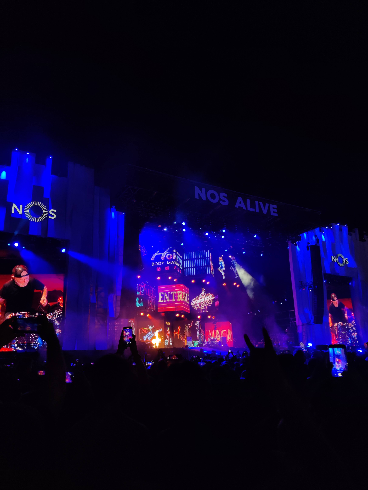
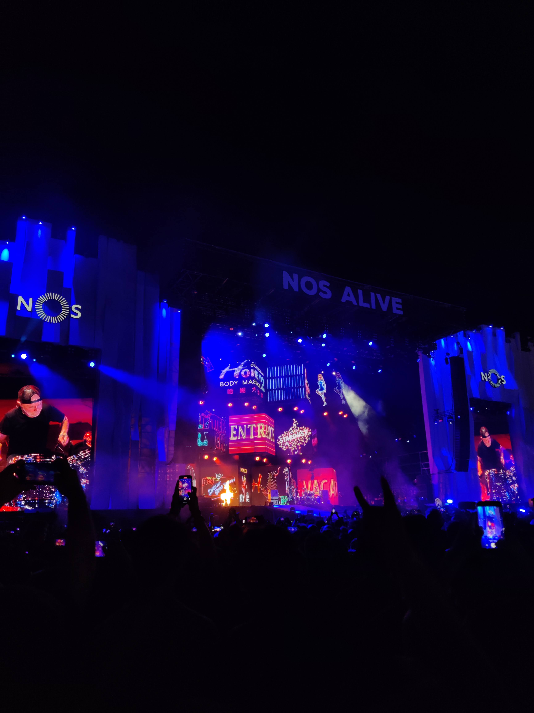
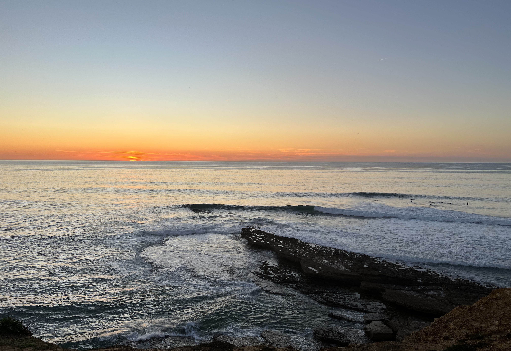
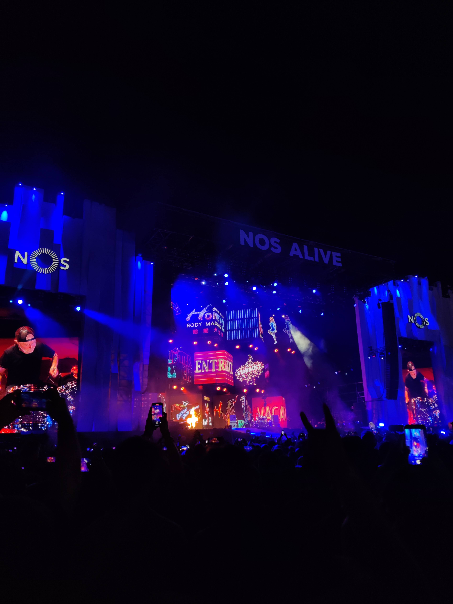

ABOUT ME
My name is Sofia Aguiar and I am a passionate and dedicated graphic designer with a degree from Middlesex University in London. My love for design began at a young age, when I studied for 10 years at a music school where I learned to play the piano and guitar. This passion for music stayed with me throughout my life, and I went on to attend an arts school for high school and then to London for university to study graphic design.
Throughout my career, I have had the opportunity to work with a variety of clients and bring their visions to life through my designs. As a Graphic Designer at CoLAB +ATLANTIC, I am responsible for all internal communication design and communication materials inside work packages for outside projects involving European organisations. I pride myself on having a strong eye for detail and being skilled in a wide range of design software, including Adobe Creative Suite. I am also experienced in project management, ensuring that all of my projects are delivered on time and to the highest standards.
One of the things that I learned while studying music at school is how to manage my time effectively between normal school classes and music classes. This experience taught me how to prioritize tasks and manage a busy schedule, which has served me well in my career as a graphic designer.
When I am not working, I love to travel and explore new places. I also enjoy staying active and participating in outdoor activities such as surfing and surf skating. My love for music, the sea and museums has not waned over the years and I still enjoy spending time with my friends and family and going for long walks through the Portuguese coast.
Thank you for visiting my about page. I am excited to connect and potentially work with you in the future.
